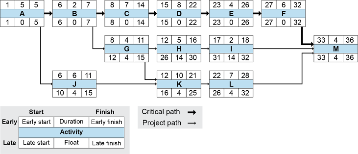
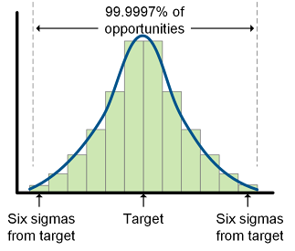

📖 ASCM Definition — data warehouse:
📖 ASCM Definition — business intelligence:
Customer relationship management (CRM) strategies will vary depending on what elements of CRM are selected, how the components will interact, and what technologies will be used. The organization also needs to determine how product life cycles and types of customer segments will influence the chosen strategy. CRM technologies are discussed in more detail after that, including core technologies and marketing/sales technologies. Implementation tips are also provided.
Scope of CRM
A CRM strategy indicates how an organization plans to initiate, develop, and sustain relationships with its customers. The CRM strategy must support the overall business strategy and financial goals. Carefully determining the scope of CRM is the first step in developing a CRM strategy.
Exhibit 6-2 shows that the scope of CRM can involve sales operations (the most functional activity in CRM), analysis, customer information dissemination, and relationship building and collaboration (activities that require the most effort and skill to accomplish successfully). Each of these elements works toward a strategic focus on product, price, placement, and promotion (the four Ps of marketing). All of this is then focused toward one or more customer segments that can be served using a unique set of supply chain capabilities. The additional circles to the right of the graphic help illustrate that the organization may need multiple supply chains to serve other customer segments with their own distinct supply chain requirements. The circular shape of this graphic also helps imply how the CRM business cycle is cyclical. The cycle involves setting CRM goals for a target customer segment or customer, acquiring the customer or market share with the customer segment, and fulfilling business terms for the customer or segment. The cycle starts again by setting new goals for customers to acquire or for existing customers.

Sales Operations
Order taking, invoicing, billing, call centers, help desks, retail locations, customer service centers, field service visits, and product returns or recalls are sales operations that all existed prior to the customer-centric organization but now fall within CRM. Sales operations from a CRM perspective also involve
Optimizing the customer's experience
Collecting and storing comprehensive data on each transaction.
Optimizing the customer's experience requires providing each customer with what they value, which could include convenience, personalized service, guaranteeing a call back as promised, or the ability to customize a product/service package. From an economic perspective, it also requires providing these features at the lowest possible cost to the organization, such as by providing some of the more expensive services on a fee basis or for free only to more profitable customer segments.
Every person who has contact with the customer should have ready access to the data collected on the customer: all prior transactions/purchases, web visits, problems and complaints, and the status of problem resolution.
Accomplishing a single virtual point of contact for each customer requires coordination with various departments, including customer service, credit checking functions, billing, accounts receivable, and so on. To keep everyone aligned and up to date, CRM sales operations rely heavily on technology.
Analysis
Analysis in CRM involves customer data validation and aggregation into segments as well as association of segments with specific product/service packages. CRM can be used in some instances (e.g., automated website interactivity) to narrow the size of a segment to one (an individual customer). Another key element of analysis is the ability to query the data or build customized data searches to analyze the data in innovative ways. These types of analyses fall under the category of business intelligence tools. While these analyses can use transactional databases as their sources, often organizations set up a separate database, called a data warehouse, just for analysis.
Analysis also requires determining appropriate performance measurements for CRM initiatives and using the information to refine later initiatives.
Customer Information Dissemination
Customer information dissemination means getting timely, focused information to the right groups in the organization and the extended supply chain. In an age when too much information can be as harmful as not enough, a function of CRM is to provide customer information and analysis specific to the needs of executives, product and brand management, marketing (e.g., lists for a promotion), sales (e.g., channel preferences, buying habits), operations, and other functions. For example, providing the right analysis to web developers can help develop better-tailored product or service recommendations.
CRM helps turn analysis into action.
Customer information dissemination also requires integrating the information being disseminated to each group so that the overall organizational strategy is being supported. CRM helps turn analysis into action.
Relationship Building and Collaboration
Relationship building is the development of lifetime customers by training staff to optimize each customer's experience at each interaction. It also involves the use of customer data to design and focus initiatives to acquire and retain customers. Relationship building requires providing staff with information on what an individual or customer segment values and designing policies and procedures to help staff make wise customer management decisions. It may involve soliciting product development ideas from customers or working to devise mutually profitable solutions to actual customer problems.
The point of relationship building is to develop customer loyalty or even mutual dependence. The key to these initiatives is educating staff on the value of lifetime customers.
The CRM business model is not about single transactions but about sustained relationships. Businesses are increasingly interested in lifetime customer relationships because they enhance profit in various ways:
Lifetime customers lower total marketing costs. As illustrated in Exhibit 6-3, the costs of acquiring new customers tend to be front-loaded in the relationship. As the relationship develops, the expenses of marketing and sales (in the left-hand graphic, the darkened bars illustrating the expenses below the zero revenue line) decline.

It is increasingly easier to satisfy lifetime customers. With improved technology, it becomes easier to retain customers through deeper knowledge of the customers' needs and buying habits. A learning relationship is formed through which companies build user profiles, track previous purchases, and anticipate trends. The longer one keeps a customer, the better one knows the customer and the greater the likelihood that one can fulfill the customer's needs and deliver satisfaction.
Lifetime customers offer increased revenue and profit opportunities. As the relationship matures, the revenue from these customers generally increases. This may be the result of increased customer satisfaction and confidence and larger orders or the result of efforts to cross-sell or up-sell. As revenue grows and the cost of customer acquisition decreases, profit increases. As shown in Exhibit 6-3, from a negative profit point in Year 1, the relationship yields sustained net profit over the lifetime of six years (the circles on each bar). Although specific profit margins will vary, the right-hand graphic suggests the ultimate profitability of lifetime customers.
Companies may also be better able to maintain profit margins with lifetime customers who value convenience and stability over price. Customers for whom time or quality is a major concern may also be more inclined to rely on established relationships with suppliers or companies. They can save time or manage their risk better by not "shopping around." Often, loyal retail customers explain their behavior by saying, "I don't have time to waste driving all the way over to X only to find that they don't have what I'm looking for, or that their quality is terrible, or that the whole experience is just depressing. I'd rather just go to Y. I know what to expect."
Similarly, in the business-to-business relationship, business customers may look at the establishment of a buying relationship as an expense item (because of the required research, creation of requests for proposals, review of proposals, contracting, etc.) and a risk exposure. ("Yes, this company may give me a better price on this component, but what if shipments are late or quality is poor?") This thinking underlies the creation of preferred supplier lists or deeper relationship types.
Components of CRM Strategy
Components of CRM strategy include those listed in Exhibit 6-4: enterprise business systems (EBS), web systems, marketing, external data, CRM applications, analytics, and service.

The first component, EBS, is the technological backbone. EBS is the collective name for some critical applications:
- Customer database, which contains customer contact details, shipping preferences, and account information
- Transaction maintenance, which enables the electronic entry of sales orders, including those from the internet, and creation of sales history files
Sales order status and updates
Sales support data, including pricing, promotion, and inventory information
Financial details of accounts receivables, interest, collections, and financial analysis
Quite often the data in EBS comes from an enterprise resources planning system.
The second component is the web system, which enables customers to use the organization's website to peruse product photos and information, order products, and participate in online auctions and even online learning.
Marketing is the heart of customer management. Its critical role is to ensure that customers know about product, service, and company information that will lead them to making purchases. This component is pivotal when it comes to identifying the specific values a customer expects from the company's products and services.
Next, external data helps support the creation of collaborative partnerships among the company's suppliers, resellers, and channel partners. This information is used to generate highly desirable bundles of products and promotions, attractive packaging design, order fulfillment, and product merchandising. It is also used in determining transportation choices.
The CRM application, the fifth component, is actually made up of three elements: operations, collaborative, and analytical CRM. Operations CRM consists of web portals, email, customer service, ordering, invoicing and billing, and sales statistics from EBS. Collaborative CRM is used to do forecasting and design processes. Analytical CRM is focused on the analysis of historical information on customers and how that information is captured, stored efficiently, and reported.
Analytics includes the evaluation of sales activities and key databases tracking prospects, product lists, and payment data. The key here is having this information be "actionable" so that business processes are customer-centric.
Service is the final component in this model, and its focus is on follow-up with the customer after the sale. This support function is instrumental in enriching customer relationships and may include cyberagents who assist customers live while in the midst of ordering, electronic service surveys, automated contact centers, and web-based self-service.
Collectively, these components provide an organization with a 360-degree view of the customer.
CRM Processes
CRM processes indicate how to execute marketing, sales, and customer service activities and specify the order in which the activities should occur. Process strategy should focus on improving the time to market for these activities by
Reducing specific tasks and activities for demand management (planning, communicating, influencing, and managing and prioritizing demand) to just those that are value-added
Executing demand management tasks as quickly as is feasible
Maximizing the number of tasks that can be performed concurrently rather than sequentially.
An essential element of CRM process strategy is a formal monitoring and feedback process. This will enable and require the strategy to adapt when actual results differ from planned results. The results of demand influencing and other CRM activities are difficult to accurately predict, so organizations should build in tolerances for sensing and responding to implementation difficulties or varying levels of customer awareness and demand for the product or service.
It is also important to review the metrics that are being used to assess performance. Sometimes organizations continue to use metrics that have not been revised to be more customer-centric. For example, a common metric used for call center performance evaluation is the number of win-back customers that have been convinced to continue as customers. (A win-back customer is one who is terminating or has terminated their relationship.) However, a better customer-centric metric would include the customer's value to the organization in the calculation.
Adopting process improvements can be challenging. One way to help drive process improvements in a busy environment where everyone is working on execution of CRM activities is to use a process such as the plan-do-check-action model so that plans can be linked to decisions, decisions linked to metrics, metrics linked to results, and results fed back into plans.
CRM Organizational Structures
Organizational structures are important to CRM because demand management efforts can differ widely and teams need to be formed to handle each different type of activity. For example, media-based marketing is a very different activity from direct marketing, and separate teams typically are needed to handle these specialized tasks. Team members can focus on one type of marketing, and training can consist of job rotations (switching between jobs to learn each one) and mentoring so that teams can adapt to changes in demand plan priorities.
When organizations shift from traditional marketing and sales to customer-centric demand management, organizational structures will also need to be adapted to ensure that job descriptions, policies, workflow, and performance measurements reflect the focus on segmenting customers by organizational value and customer needs.
Finally, organizational structure is an issue for CRM strategy because of the different types of customers that each require different types of sales and marketing campaigns: prospective, vulnerable, win-back, and loyal. CRM teams can specialize in a type of campaign or perform job rotation to learn the most effective approaches to succeeding with each type. Note that when performing job rotations or other learning activities, a best practice is to get experience while working with the less profitable customer segments so as not to endanger the more profitable segments (except with win-back customers, where it is always a priority to contact the most profitable segments first and usually not as a training exercise).
CRM Technologies
Technology has driven the change toward a customer-centric and integrated marketplace, and it has also facilitated the way businesses can manage this change. If technology has made it easier for customers to shop for the best price, it has also made it easier for businesses to gather information about customer buying habits so that marketing programs can be adjusted to their targeted audiences. If electronic commerce has cut into the business of brick-and-mortar retailers, it has also improved cash flow and significantly reduced costs associated with invoicing. Similarly, technology has been used to accomplish the levels of integration necessary for CRM. Suppliers can communicate with customers in real time, and information can be shared so that systems show current status. Processes can be automated, enabling spending more time on value-added work. Alerts and notifications can be made instantly so that corrective actions can be taken immediately.
CRM technology strategy relies on proper collection, storage, and use of customer data. Storage of data is critical: All CRM transactional data should be stored in a single database that is integrated and capable of scaling up to handle a large amount of throughput from CRM operations. This database can also serve for data analysis and reporting purposes if it is robust enough to handle such demands, or a separate database for reporting and analysis can be developed, called a customer data warehouse (CDW). The important strategic choice is between a CDW and a single database. If a CDW is deemed necessary, it should be linked to the transactional database to receive regular automated batch updates so it can be kept synchronized. If the choice is to have a single integrated logical database, it can simplify reconciliation but must be robust enough not to slow down transactional processing tasks. Cloud-based CRM databases are typically used for both transactional and analysis purposes.
It is important to verify that transactions are being recorded and that there are steps to ensure data validity.
Data collection practices also need review in a CRM strategy. It is important to verify that transactions are being recorded and that there are steps to ensure data validity. For example, an organization can avoid common data collection issues by not allowing outbound call records to be deleted until they are first transferred to the CRM database.
Other technology requirements for a successful CRM strategy include selection of tools for effective data mining (the process of studying data to search for previously unknown relationships) along with decision support systems, call center applications, and campaign management tools.
Product's or Service's Stage in Life Cycle
The product life cycle is shown in Exhibit 6-5. Here we'll look at the life cycle stages from the point of view of how they intersect with CRM, and we'll use case studies to see how different businesses manage their CRM strategy relative to the stages of their products' lives.
Development Stage
New product development (or modifications to existing products) is essential to cultivating brand loyalty and developing lifetime customers. CRM makes it both possible and necessary to align product development with what customers actually want. Information gathered through CRM (e.g., customer feedback, focus groups, online customer chat room comments, data on customer buying behaviors and trends, blogs, and social networking sites such as Facebook or LinkedIn) can be used to identify an idea or concept that has the potential to meet customer needs and increase profits. Once customer desires have been identified, a successful product design must be measured against profit goals and the product's ability to meet those customer expectations and improve competitive position.
The next step is to gauge the success of the product in the actual marketplace. CRM can be employed here to select test customer segments. Both the product and its promotional plan can be tested against key performance indicators such as cost and profit goals, customer satisfaction measures, market penetration, or improvement in competitive position. Testing should confirm the accuracy and completeness of the CRM strategy:
- Is the product what this segment is looking for?
- Is the pricing correct?
- Is this the correct channel?
- Is the audience hearing and responding to promotions?
- What customer care issues have arisen? What infrastructure will be needed to tend to those issues?
In some business types, the development stage offers an opportunity to create customer ownership. By involving key customers in the product- or service-crafting phase, the business creates a sense of partnership and mutual investment that will translate into greater potential for lifetime customers. These key customers will provide an early platform of sales to sustain the product until it begins to grow. They may become a source of recommendations, referrals, or "word of mouth"—person-to-person advertising.
Case study: development in clothing retail business. Here's the background on the first case-study company, a clothing retailer that has outlets in major cities on three continents:
- This company targets the young shopper and offers a full line of clothing and accessories at moderate prices. Store designs reflect the shoppers' cultures.
- Currently, buyers order products at quarterly shows from a variety of vendors. The problem with this is that the retailer is always chasing changing trends. Stock must reflect the very latest fashions. A complicating factor is the unpredictability of local markets. What's "hot" in one area may not sell at all in another market.
- If the company guesses wrong on a fashion or if they take too long getting items into the stores, the stock must be moved to the deeply discounted sale racks. At best, the supply chain is wasting expensive floor space on items with little or no profit margin. At worst, items will have to be sold to a reseller or discarded.
Profit margins are tight on some lines since price points (the points at which the young shopper with somewhat limited finances shrugs and goes somewhere else) dictate aggressive pricing. In spite of these challenges, competition is growing for this customer segment, and it is becoming more difficult to distinguish the value the retailer is delivering and to remain profitable.
Our case-study clothing company has a history of chasing trends and reducing prices on unsold clothing. It has always been customer-centric but not exactly from the right perspective. It responds to where its customers are right now by buying product designed and produced by other companies, but by the time product reaches the stores, the customers have moved on to new trends. The organization needs to predict or even create trends. However, the clothing company's existing data are not very helpful; the information can identify strong and weak sellers in the past, but there's little predictive value.
To solve these issues, the clothing company decides to get better customer data in part by establishing its own credit card and frequent purchaser affinity card programs. This will ensure access to accurate data and also promotional access to targeted customers (through direct mailings, billing inserts, eco-friendly non-spam digital marketing, and so on). Working with marketing specialists, it uses focus groups of actual customers to explore how its young shoppers define style, what influences their judgments, what the anticipated product life is, how tastes may vary in different markets, and what restrictions may shape their decisions (like cost). With a better sense of what its customers want, the clothing company can now work with designers and manufacturers to create lines of unique products and accessories that meet the customers' product requirements.
Introduction Stage
CRM focus at the introduction stage is on supporting the promotional program. Advertising costs are typically high during this stage in order to rapidly increase customer awareness of the product. New customers must be supported to ensure a high level of satisfaction with the product and the business.
Case study: introduction in leisure boat business. The next case-study company is a boat manufacturer that produces high-performance, complex, and expensive leisure watercraft aimed at very high-end consumers:
The company was founded by an enthusiast who has always been focused on the boats' performance on the water, designing the best boats with cutting-edge materials and processes. The manufacturer designs its own distinctive hulls but outsources engine design to a well-respected designer. Engines are built by subcontractors. Assembly and finishing is done in-house. The boats are sold through marinas, who act as distributors.
The marinas sell more than one manufacturer line, so there is some competition for the hearts and minds of the marina owners and their salespeople. The marinas do a considerable amount of customizing at their end, adding different electronic systems and accessories, changing seating, and even reconfiguring the interiors. Sometimes, the original design and unique look that the manufacturer prizes are obscured in the process. Components of poorer quality are sometimes used in the customization process, and the customer may associate the problems with the boat manufacturer rather than the marina distributor or parts manufacturers.
This is an expensive item to produce and a challenging item to ship and sell. Component expense limits the amount of inventory that can be manufactured before sale; product size limits how much can be displayed at the point of sale. Delays in delivery can mean that a customer loses the use of the boat for an entire season; customers may cancel purchases and the manufacturer then has to pay for space at a marina. If delays occur repeatedly, the manufacturer risks losing distribution at a marina. Boats also frequently incur minor damage during transportation to the marina and eventual owners. These are small details, but they can seem like major issues to a customer who has paid a premium price. Customer care during and after the sale is a constant concern for the marina owners, since this is a demanding customer segment. The marina owners frequently complain to the manufacturer's sales representatives that the company just isn't in touch with their needs or those of the customer.
Our leisure watercraft company has the challenge of becoming more customer-centric as well as more sensitive to the needs of its supply chain partners—the marinas that distribute the product. So it involves its distributors in developing a new model and a promotional program. Marketing targeted at affluent previous boat owners succeeds in producing more-than-satisfactory initial sales. Trends in customization requests and aftermarket customization are carefully tracked so that these customer interests can be reflected in future models. The boat company creates customer care teams. Each new boat owner is assigned a specific customer care representative who has been thoroughly trained on the product and is empowered to authorize rapid correction of any product flaws. All new boat owners are automatically registered in an exclusive club that offers discounts on related products and invitations to special events.
Growth Stage
Customer care must be sustained during the growth phase. Information is used to identify strong and weak customer segments, and advertising messages must be tested for their effectiveness in reaching these groups.
Case study: growth in financial services business. The third case study looks at a financial services company that offers a variety of products and services to a wide range of customers:
- Some products are their own; others are created by specialized investment or financial services companies—for example, socially conscious investment, insurance, or credit card programs. The company sells its products and services through independent financial consultants who agree to sell only the company's line of products and services.
- Tough markets and the internet have cut significantly into their business. Many people now handle their own investments. The market itself is almost too diverse. It is difficult to meet all the needs of these different customers and market to them successfully.
The company also often loses lucrative high-value investors when financial consultants terminate their association and go off on their own. Generally, financial consultants leave when they become frustrated because they cannot offer the level of service or customer care that their clients expect. This is often due to limitations in the company's information systems architecture. At the same time, they are very sensitive to any infringement by the company into their relationships with clients. The financial consultants prefer that the clients think of them as the provider of product and service rather than the company itself.
Our financial services business has developed new products and services that have resulted in stronger relationships with both its distributing brokers and the end customers. One of its innovations is an information system that allows brokers access to various information sources, analytical capabilities, and promotional vehicles (like customized mass emails or print newsletters); it also provides customers with online access to real-time account status and history reports. The company is comparing the effectiveness of these newer promotional activities with the more traditional ones of cold-calling prospects to offer new products.
Maturity Stage
During maturity, the organization focuses on using its dominant position to entice its competitors' customers to switch. At the same time, it must continue to attract new customers. Sales promotions may be increased to encourage retailers to give priority in merchandising. Customer care activities that affect brand image are especially important as an answer to increased competition.
Case study: maturity in clothing retail business. Our clothing retailer (described above) knows that, for each product line, maturity arrives very quickly. Its strategy is to develop new product that is ready for introduction as soon as the old product has peaked. This requires careful tracking of purchasing numbers at all outlets. With real-time data, rather than weekly or monthly status reports, the company will be able to move quickly. It will identify those outlets in which sales numbers are strongest, move inventory to those outlets, and implement promotional programs to sell off stock at only modest discounts. Meanwhile new product will be introduced in the more mature markets.
Decline Stage
In this stage, customer care is critical. Customers with soon-to-be-obsolete products must be assured that they can receive service and replacement parts. They can be provided a means of migrating to the newer products. Customer care now can promote lifetime customer development.
Case study: decline in leisure boat business. Our leisure watercraft company is meeting the challenge of becoming more customer-centric. Its new model is well received by both marinas and customers. Unfortunately, it was also well observed by its competitors, who have copied some design elements. The company decides to keep its image as a leader by developing and introducing an innovative new model. Customers who bought the first product are targeted for early promotions. A used boat program has been developed for marinas to handle the anticipated inventory of used boats. Meanwhile though, the company has worked through a plan with marina owners to ensure ample stock for repair and replacement. Customer care teams remain assigned to their existing customers to ensure continuity of service.
CRM Core Technologies
The CRM processes depend on data, and CRM's core technologies of customer data warehouses, business systems, and segmentation technologies can assist in the collection and analysis of customer data. An effective CRM system ensures that everyone who can influence the customer experience (e.g., sales, customer service, credit, accounts receivable) is provided with critical information about the customer, such as what the customer values and how each individual can help to provide a positive customer experience.
Here are a couple of examples of how technology can be employed to support CRM strategies:
Customer interaction centers (CICs) are a means of grouping service functions so that the overall customer experience can be better managed. CICs often use multimedia and other technology tools so that the customer service representative and the customer can engage in a highly personalized verbal, texting, or chat interaction. The representative can pull up order, account status, product warranty, and maintenance information. The system will also suggest account upgrades that are pertinent to the customer.
Customer experience management (CEM) technologies have been developed in response to customers wanting more control over their buying experience and their desire to be treated as individuals with unique needs and wants. Organizations with great supply chains are using CEM to generate enhanced customer loyalty and a competitive advantage by listening to the nuances of customer feedback. These technologies are intended to measure both tangible and intangible elements, such as customer feelings and expectations, so that the information can be used to create a superior buying experience.
Let's take a closer look at the CRM's core technologies.
Customer Data Warehouses
A data warehouse is "a repository of data that has been specially prepared to support decision-making applications" (ASCM Supply Chain Dictionary). A customer data warehouse (CDW) contains information about an organization's customers, products, and marketplace. A CDW extracts information from internal and external sources, standardizes and consolidates the information, and stores it for easy access and retrieval. Organizations generally use CDWs in conjunction with their existing information technology infrastructures, which could be an enterprise resources planning (ERP) system or a dedicated CRM transactional system and database. Exhibit 6-6 shows how a customer data warehouse can interface with an organization's ERP system to keep up to date with new transactions while providing a dedicated source for data analysis.

One alternative to using a CDW in conjunction with a transactional database is to use a cloud-based database (virtual database accessed via the web) for either transactional or analysis activities, or for both, as part of a software as a service (SaaS) or organization-hosted cloud.
For organizations able to implement a customer data warehouse, there are many benefits:
Strategic marketing.
A CDW allows the organization to improve segmentation of the customer base by providing data about customers and their preferences and vulnerabilities. This helps make promotional programs more cost-effective. For example, the data can be used to identify and implement special offers to loyal customers while enticing prospects with low-cost introductory offers.
New product development.
Data on customer needs provide valuable input into product design and development decisions.
Channel management.
CDW data help compare the effectiveness of channels and rank the importance of the channel to various customer segments. Analysis of data on channels may indicate, for example, that moving certain customer segments to lower-cost channels will require incentives.
Sales productivity.
Human and technology resources can be allocated according to customers' channel preferences and purchasing patterns to increase sales productivity.
One-to-one marketing.
The ability to customize programs and create a one-to-one marketing approach cannot be achieved without a CDW. One-to-one marketing and customer care greatly enhance overall customer satisfaction and loyalty.
Business Systems
Business systems provide the backbone for customer management. An organization's business system has several critical areas:
Transaction maintenance (order entry, status of open orders, sales history)
Information (pricing, promotions, inventory balances)
Financial details (account balance information, collections, payment records, financial analysis)
Segmentation Technology
Creating useful segments often requires the use of CRM technology. Computer algorithms can be used to model customer behavior. A best practice is to base such algorithms on demographics and historical purchasing patterns and limit use of assumptions or projected behavioral traits. Once such a model is developed, it should be validated to make sure that prospective customers are being placed in the correct segments.
Customer Care and Marketing/Sales Technology
Web-enhanced customer service provides a variety of solutions to increased customer expectations in the areas of response, product customization, convenience, order status visibility, and returns processing. Solutions include online frequently asked questions and answers (FAQs), online customer service representatives, and online chat rooms dedicated to particular customer concerns. Customer service representatives are able to handle many complex issues immediately by accessing customer records or order status information and can resolve others via email. In addition, highly detailed product information that can be presented online (and may not be available otherwise or only at a high level) can actually reduce product returns.
Traditional phone-based care has also become more sophisticated. Customers waiting in a universal queue are greeted with choices, which alleviates the feeling of being trapped on hold. Callers who don't want to wait on hold can enter their phone number and request that they be called back when it's their turn in the queue. Callers with simple questions or issues can record a voice message, which is played back to the next available agent, along with a request for a return call if desired. Callers who choose to wait in the queue receive periodic announcements of expected hold time as well as targeted messages such as new product bulletins or holiday hours. They may also be directed to websites or chat/text services for faster service.
CRM marketing technology supports marketing's tasks: identifying the wants and needs of customers, determining which customer segments the business can best serve, and making decisions on the appropriate mix of products, services, and programs to offer to these markets. This component helps to identify what each customer considers as value; to set, track, and evaluate campaign and pricing strategies; and to assess customer satisfaction.
CRM technology provides sales personnel with access to order status, customer history, and product and customer information. Applications to assist the sales function include account/territory management, contact management, campaign management, and field sales communication and management.
CRM technologies are available as SaaS, which typically uses cloud computing in its configuration. In addition to being a service that can be accessed immediately from anywhere upon paying the subscription fee, such services have benefits such as the ability to access large segmented prospect lists, to network and chat with other sales professionals (either within the organization or outside it), or to download mobile device applications such as for inventory checking.
Some systems integrate sales and marketing uses. In one SaaS product, the marketing view provides the marketing group with a complete customer view that is shared with sales and support. Sales will better understand which marketing campaigns are active, the rationale behind them, and the types of leads they attract. The package may include other tools: lead management, auto-response and trackable emails, workflow automation, a marketing encyclopedia, marketing analytics, and direct, mass, and e-commerce marketing.
Exhibit 6-7 illustrates how various CRM technology tools can be used to support customer service, marketing, and sales. These tasks are divided into four areas: account management, sales force automation, business intelligence, and marketing automation.

Account Management
Account management refers to managing and using customer information for the purposes of marketing and customer care. It includes such technology as call center automation (including automatic call distribution, interactive voice response, computer-telephony integration, and internet call management). Account management applications are designed to provide detailed information about account data and sales activity that can be accessed instantly. These tools support marketing tasks like segmentation and promotion and also permit managers to match sales representatives and marketing teams to customer characteristics.
Sales Force Automation
Sales force automation (SFA) is the core functionality of CRM technology because it collects customer data from transactions, customer service call centers, and marketing for use in customer acquisition and retention activities. Sales force automation allows salespersons and field sales agents to take ownership over maintaining and enhancing information on their customers, so it deepens relationships with customers. Salespersons can use it to schedule their next point of contact or collaborate with other salespersons.
Sales force automation can increase customer retention.
Sales force automation can increase customer retention. It promotes more open relationships with customers by providing
Sales promotion and discount management, including impact on pipelines and existing customer accounts
Dashboards listing customer analytics such as forecasts and profit margins
Data synchronization with mobile devices
Calendars and contact lists that can be merged with automated workflow programs
Real-time data visibility
Online networking when offered as SaaS or cloud computing.
Sales force automation software usually includes the following tools:
- Contact management enables the organization to prospect from customer data such as name, address, phone numbers, titles; to create organization charts; to maintain marketing information; to identify decision makers; to identify customers by value; and to link to supplementary databases.
- Account management provides on-demand, detailed information regarding account data and sales activity that allows matchups between salesperson capabilities and customer attributes.
- Sales activity management provides customizable sales process methods. Sales representatives are given individualized steps to follow at each point in the sales cycle.
- Event management provides active notifications of sales event priorities such as proposal deadlines, campaign openings, closing dates, or product demonstration appointments.
- Opportunity management or pipeline management applications help turn leads into sales, possibly by distributing leads among salespersons. They help to define the sales team, the specific opportunity, the company involved, and the proposed closing date. They can also track win/loss ratios.
- Quotation management helps salespersons write quotations for complex orders requiring product configuration. It includes electronic reviews of proposals for capacity and feasibility.
Knowledge management provides access to sources of information that are housed in each organization and are difficult to automate. This may include policy handbooks, sales and marketing presentation materials, forms and templates such as contracts, historical sales and marketing reports, and industry and competitor analysis. Knowledge management can act as a storehouse of all forms of information that can be easily added and referenced through online browsers.
Business Intelligence
Business intelligence is "information collected by an organization about customers, competitors, products or services, and processes. Business intelligence provides organizational data in such a way that the organizational knowledge filters can easily associate with this data and turn it into information for the organization. " (ASCM Supply Chain Dictionary). This includes decision support systems (DSS) and data mining tools to generate customer segments and determine customer segment value.
Marketing Automation
Marketing automation employs software applications to search, compile, and use customer databases to target customers and then generate a marketing campaign using mass media, direct marketing, the web, telephone, and other types of technology tools to reach customers. This is known as campaign management or enterprise marketing automation (EMA). Campaign management automates the campaign process through tools such as customer intelligence and data extraction, campaign definition, detailed campaign planning and program launch, scheduling of activities, continuous performance measurement, and response management. It uses the internet to capture, extract, and analyze campaign information. By doing this, marketing groups are better equipped to design future campaigns that enhance customer relationships and ultimately increase profits.
The following are the major components of marketing campaign management:
- Media-based marketing. Tools for launching, tracking, and budgeting for media-based advertising can help budget, manage, and time advertisement buys and track results.
- Direct marketing. Tools for telemarketing or sending direct mail or email can schedule and track prospect and customer contacts, responses, and success rates.
E-commerce marketing. E-commerce marketing tools help organize online media advertising, sales, and catalog management. This technology manages websites or portals that allow customers to visit catalogs, enter orders, review pricing, configure orders, send emails, and perform other self-service functions from order status to review to online learning.
Marketing events. Marketing events can be communicated through online newsletters, seminars, and webcasts. (Traditionally, this approach was done through tradeshows and exhibitions.) With enhanced technology, customers can view new products and experience new services immediately.
Campaign management by customer type. Marketing campaigns can be tailored to customer type:
- Prospecting campaigns. Prospecting campaign tools include segmented contact databases, automated personalized responses to prospects, and sales leads and data on prospects.
- Vulnerable customer campaigns (customer retention). It is estimated that businesses lose as much as 50 percent of their customers over a five-year period. By using campaign management tools, organizations can identify customers who are most likely to leave and weigh the possible impact of promotional efforts.
- Win-back campaigns. Win-back tools include prioritized lists of customers to contact based on their value to the organization and metrics based on customer value.
- Loyalty campaigns (cross-selling and up-selling). Loyalty campaigns include loyalty reinforcement such as personalized automated thank-you messages or affinity card bonus point systems. Tools must also be in place to analyze the customers' needs and offer cross-selling or up-selling alternatives that pique their interest.
- Promotions. Promotions include web-delivered giveaways, contests, or discounting that can immediately engage the customer. This eliminates the need for paper-based or telemarketing tools. Captured data can be directly input into the database and used for ongoing review and campaign modification.
- Response management. Response management uses marketing campaign information to determine the impact of the campaign by calculating actual customer profitability. Once this has been completed, the marketing automation tools can assist in refining and altering the course of the campaign, if necessary.
Keys to Successful CRM Implementation
Why does CRM sometimes fail to provide the results a company needs? Often an organization is too focused on the CRM technology itself and doesn't spend sufficient time getting to know the customer. Organizations may also find it difficult to execute a paradigm shift from being focused on product marketing to being focused first on the needs, wants, and preferences of the customers who may buy those products. Sometimes even the metrics for measuring success are poorly chosen. Failures such as these may stem from poor, or nonexistent, testing of CRM software or applications. It could also be a culture or leadership failure. Company leaders and managers need to be on board and demonstrate their "customer-first" commitment to their employees to help the culture embrace CRM.
CRM software may have robust features, but if such systems cannot be easily implemented within the limitations of the organization's resources and culture, then the technology investment will add little value. Businesses implementing CRM technology should remember the following.
Architecture Needs to Be Determined Early.
It is important to establish a thorough, well-thought-out information system infrastructure early rather than adding technology systems at random. Companies should assess their current level of infrastructure and plan ways to migrate toward higher levels of integration. If an SaaS (software as a service) solution is selected, the organization will still need to decide how to make use of its existing customer data and how to interface with its larger transactional systems, such as ERP (enterprise resources planning). This may require an application programming interface from a supplier.
There are several maturity levels of integration:
- Disconnected technology. The organization uses a variety of noninterfacing databases to house information. Data cannot be easily combined for deeper analysis or shared immediately throughout the organization.
- Interfacing technology. Various systems feed into each other, creating some capacity for integration of the data.
- Internally integrated technology. One main system captures and stores all the different data elements.
- Multi-enterprise integrated technology. Multiple business lines within a large, dynamic organization share captured and stored data centrally, allowing synergies to occur.
- CRM technology integrates data from different transaction points to anticipate customer needs and support CRM strategies. These integration points might include the following:
- Online sales.
- Not only do online sales lower business costs, they provide an opportunity to capture valuable customer information. This information may include the compiling of user profiles, site navigation preferences such as visits to a particular tool or link, and information on product preferences.
- Order/provisioning system.
- Customer orders and service interactions, occurring through all channels, are logged and used to update customer profiles. Customers can be targeted with products and offers based on transaction history.
- Customer problem tracking.
- Problems are logged for analysis and to predict specific customer needs. Unresolved problems generate a notification to a customer service representative to help rectify the issue with the customer.
- Call center.
Contacts with call centers generate information that immediately updates the customer information profiles and any predictive model scoring in the CRM system. Information from a call center can be tracked in the same manner as online contacts.
System Should Enhance Efficiency.
The system should make CRM tasks easier and faster, not more involved and difficult to accomplish.
For example, a large commercial airline company makes the decision to use CRM technology as a way to create stronger customer relationships while making the system intuitive for the customer-facing staff. Working with its information technology group, the airline begins collecting data on incidents when customers are upset with the airline. According to the data, problems with delays affect 20 percent of the airline's 100 million annual customers. In order to decrease that percentage, the organization develops a customer care system for gate agents that links a graphical seating chart to an airline reservation system and data warehouse. In this system, passengers can be tracked in real time to determine whether they are on board, reducing confirmation time for standby passengers. Additionally, when planes are delayed, the system links flight arrival times with the reservation system to identify, before they even arrive, which passengers might miss their connecting flights because of a delay. Agents rebook delayed passengers and send an agent to the arrival gate to tell passengers where to go for their new connecting flight.
Implementation Should Be Coordinated Throughout Organization.
Implementation teams should contain employee representatives from every area that will be using the system.
Everyone Must Be Trained, and Some Will Need More In-Depth Training.
Job processes must be redrawn to reflect the new CRM system. Training must be delivered to everyone according to his or her level of involvement. But remember also that CRM is not just a software system. Technology alone cannot solve the challenges that businesses and supply chains face. Training staff in the CRM methodologies can help them buy into the concept and anticipate challenges that may arise.
Implementation Is Measured Against Customer Needs/Expectations.
Organizations should ask themselves the following questions:
- Will the customer use the technology as a common way of interacting with the organization? Is the customer ready to use the technology? How many customers have access to the internet based on their geographic location?
- How difficult will it be for the customer to learn the new technology? Does it build upon more familiar technologies or forms of interaction? This will make it easier for customers to migrate to automated CRM activities.
- Does the technology perform to customer expectations? Does it improve their experience or degrade it?
- Does the technology allow personalization and customization? The successful use of personalization technology provides a better customer experience and does not clutter customers' screens with irrelevant information.